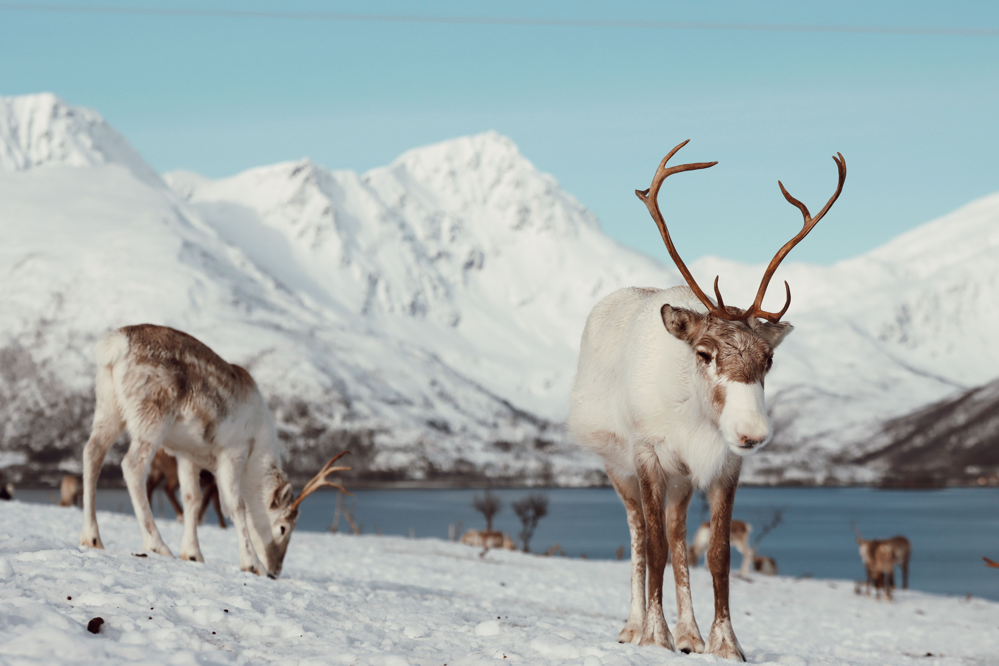
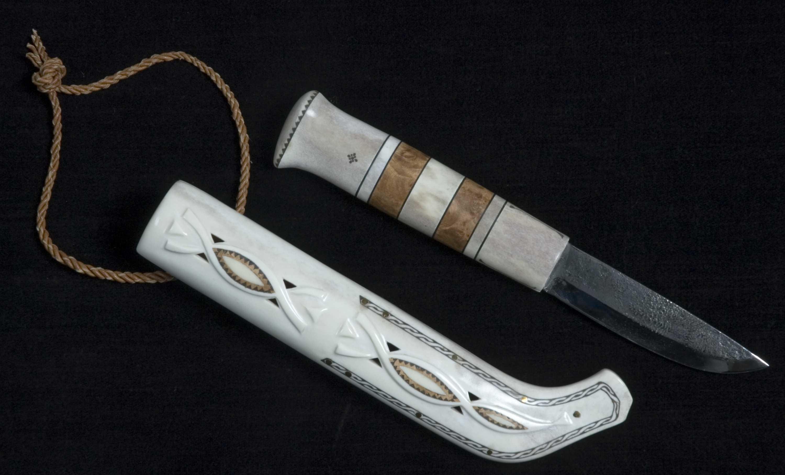
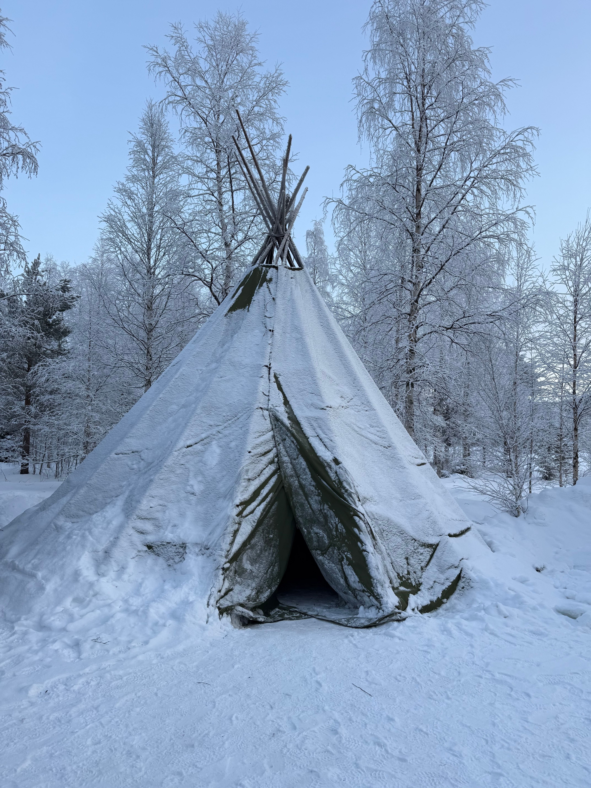

CAZA DE AURORAS ÁRTICAS
Descubre la magia del cielo polar y la cultura que lo habita
PRONÓSTICO DE AURORAS
0.0
Visibilidad de auroras esta noche
Tromsø, Noruega
Tromsø, Noruega
MEJORES MESES
Septiembre a Marzo
Septiembre a Marzo
PUEBLO INDÍGENA SAMI
Guardianes del norte
El pueblo Sami ha habitado la región ártica durante miles de años, preservando el pastoreo de renos y sus tradiciones ancestrales.
 Traje tradicional Sami
Traje tradicional Sami

Renos y pastoreo
Artesanía duodji
Música y tradición Joik